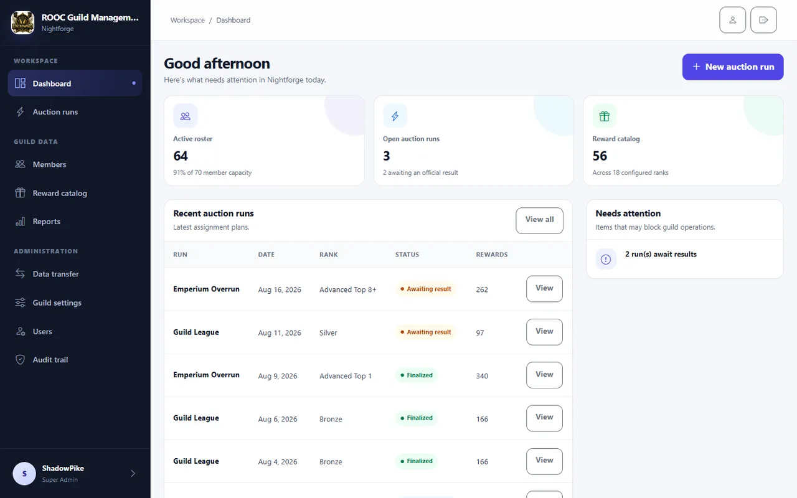

Replace repetitive manual workflows
I use n8n and Python to automate recurring tasks. My experience includes background job automation, business process analysis, and repeatable data pipelines with checks built in.
A repeatable data pipelineSenior developer · Production experience since 2013
Philippines · UTC+8
John Berlyn Isip · You can call me JB.
I automate repetitive business processes using n8n, Python/Django, APIs, and AI-assisted development. I connect your existing systems, replace manual workflows, and build custom internal tools when off-the-shelf automation isn’t enough.
Where I’ve worked
How I help
I work through the business rules with your team, choose the right approach, and carry the work from requirements through production and maintenance.
I use n8n and Python to automate recurring tasks. My experience includes background job automation, business process analysis, and repeatable data pipelines with checks built in.
A repeatable data pipelineI build APIs and integrations so applications can share data and work together. I’ve led enterprise sign-on and data interchange projects and brought operational data into shared dashboards.
Enterprise integration workWhen off-the-shelf automation reaches its limits, I build custom applications with Python/Django and other proven stacks. I take responsibility for the data model, interface, deployment, and maintenance.
An operations tool I ledSelected work
Internal tools, enterprise integrations, and repeatable data workflows. Each example shows my ownership, the decisions behind the work, and the result.
NGCP · Energy operations
A dashboard for operations teams working to the electricity market’s five-minute settlement intervals.
NGCP · Systems integration
Separate logins and user records made access difficult to manage across an existing set of business applications.
Legacy systems · Data migration
Business data needed to move to a new database while day-to-day operations continued.
Comtrac, via GoTeam · Investigation software
Investigation records need careful validation, while investigators need different ways to search and read them.
05 / Independent project
A working application for guild rosters, loot auctions, and rewards. I designed and built the system from the workflow through to deployment.
The app opens at sign-in.

Career history
Lead Specialist and senior engineering roles across energy, government, property, healthcare, and investigation software. Enterprise project leadership, architecture contributions, and developer mentoring.
July 2024 - Present
National Grid Corporation of the Philippines
Oct 2023 - Apr 2024
Realtair, Inc. (Remote)
Feb 2023 - Sep 2023
GoTeam (Remote)
Sep 2022 - Feb 2023
Theoria Medical (Remote, USA)
Nov 2020 - Sep 2022
National Grid Corporation of the Philippines
Jan 2016 - Nov 2020
National Grid Corporation of the Philippines
Jun 2015 - Sep 2015
Teradata
Dec 2013 - May 2015
Commission on Audit
Jun 2013 - Nov 2013
National Grid Corporation of the Philippines
Same nine roles, built as a side-scroller with no libraries, just CSS and
requestAnimationFrame.
Walk with ← / → or A / D, jump with W / Space, or use the on-screen controls. Tap a building to walk straight to it. Visit every building to collect the stars, bump the ? blocks for coins, and reach the flag to finish.
Technical skills
My current work centers on n8n, Python/Django, and APIs, with Codex and Claude Code supporting development. A broader production background lets me work with existing systems and choose a stack that fits the job.
01 / Current work
02 / Production experience
03 / Working knowledge
Working together
I talk to the people doing the work, map the rules and exceptions, and agree on the first release. Then I decide where a workflow, an integration, or a custom application fits.
I explain architecture tradeoffs, test business rules, and document how to run and change the system. I’ve led enterprise projects and mentored developers, with maintenance as part of the job.
I use Codex and Claude Code to support development. I review generated code, validate the behavior, and remain responsible for the architecture and the result.
I work with teams on workflow automation, system integrations, custom internal tools, and reviews of existing applications. Engagements can be a scoped build or ongoing senior development support.
Discuss your processA little about me
I’m John Berlyn Isip, a senior developer based in the Philippines, building production software since 2013. My focus is business automation and internal tools: understanding how a business runs, then making a difficult or repetitive part of someone’s day easier.
My experience includes leading enterprise software projects, contributing to application architecture, and mentoring junior and mid-level developers. Working in-house has taught me to plan for maintenance; working remotely has taught me to explain decisions clearly and keep people informed.
Outside software, I serve as a youth pastor at Come to Jesus Church Montalban and consult for GFMIC, Inc. Listening, teaching, and working with people are part of both sides of my life.
Get in touch
Tell me about the process, the systems you use, and where your team gets stuck. Let’s work out what to automate, connect, or build.
Based in the Philippines · UTC+8
Experience working with Australian and US teams.